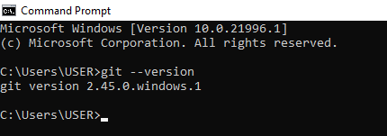
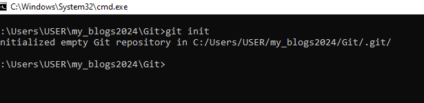
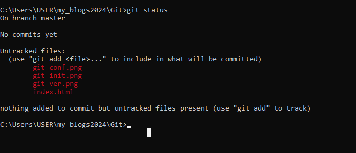
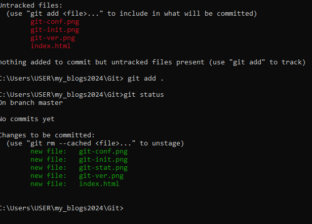

Git is a version control system. A version control system allows you to manage your projects and helps in tracking changes and updates to your project files and repositories on GitHub and other repositories.
There exist multiple version control systems such as Mercurial, Azure DevOps server, Aws codecommit, and SVN.
In this blog we are going to delve into Git and GitHub.
To to check whether Git is installed you need to run the following command in your command prompt: "git --version" if git is installed the cmd will show the version of Git installed in your system.
A sceenshort of cmd showing the version of Git installed in my system.
If Git is not installed you will get an error in cmd stating that git is not recognized as internal or external command. Then you will have to install Git.
To install Git click here: Downlod Git When the download is done, click on install and follow the instructin provided.
To configure Git you need to add your usernane and email address of your GitHub account. Here is how to configure. In cmd run this commands:
A sreenshot of cmd with configuration commands.
A Git repository is the .git/ folder inside a project. This repository tracks all changes made to files in your project, building a history over time.
To initialize a Git repository, open the foder where your project is located in the cmd and run this commmad; "git init"
A screenshot of cmd showing how to initialize a repository
The files in yor folder you inialized will appear as untracked files. To know files in your repository are tracked or untacked run this command:"git status"
To add a file to the staging area you need to run this command: "git add " . If you want to add all the files include a fullstop "." after add, or the name of file you want to add.
a A screenshots of the add command